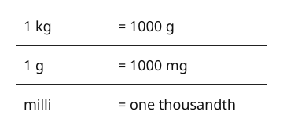

Part of Metric Conversions. Answer in the chat (1: ..., g: c), add sure or guess after any answer, and say done when finished.
Last time: how many milligrams are in 1 gram? You said b) 100. It is c) 1000.

You can already change metres and centimetres. Masses use the gram, with the same prefixes, so nothing new to learn but two facts: kilo means 1000 and milli one thousandth (notes 1, 2). So 1 kg = 1000 g and 1 g = 1000 mg, and the multiply or divide rules work as before.
Q1. How many grams are in 1.2 kg?
1200 (sure)
Right: 1.2 x 1000 = 1200 (notes 2, 3).
Q2. How many grams are in 3600 mg?
3.6
Right: 1000 mg make a gram, so 3600 / 1000 = 3.6 (notes 2, 4).
Q3. Ben says 1 kg is 100 g, since kilo is like centi. What is wrong?
kilo means 1000, so 1 kg is 1000 g. Centi is a hundredth, so it makes things smaller, not bigger
Right: kilo is 1000 of the unit, centi one hundredth of it (notes 1, 2).
You can now change between kg, g and mg.
A run is 2.5 km long. How many centimetres is that?
a (sure)